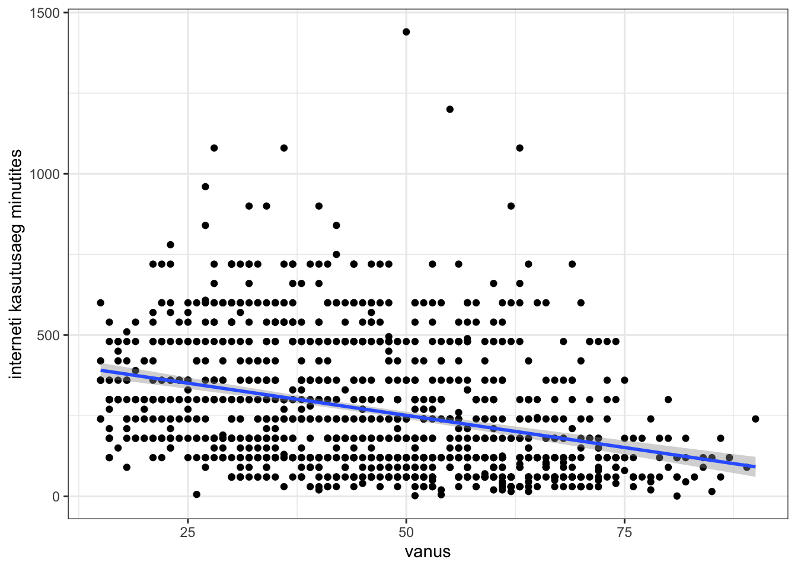
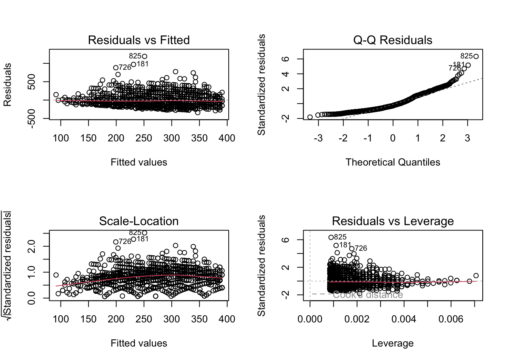
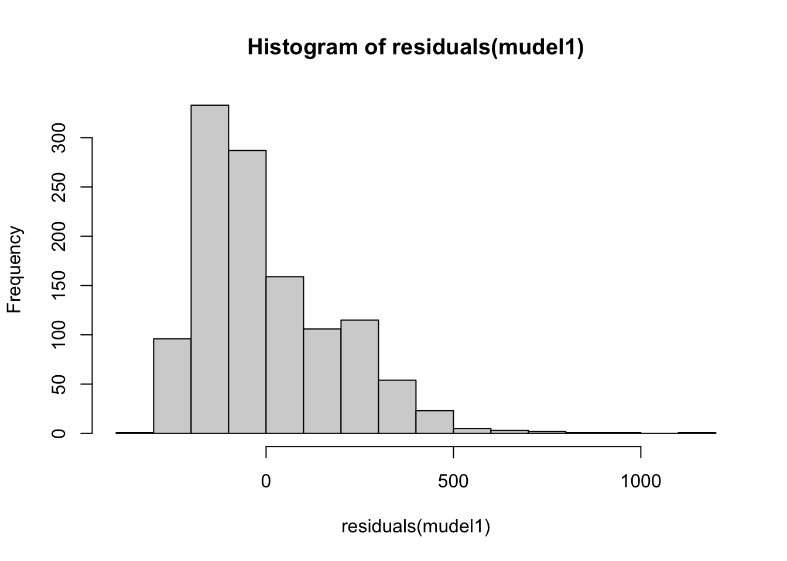
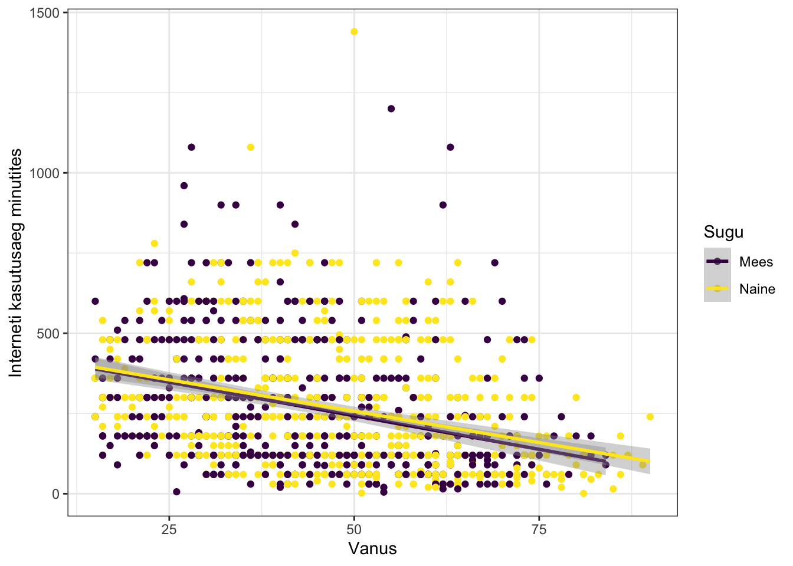
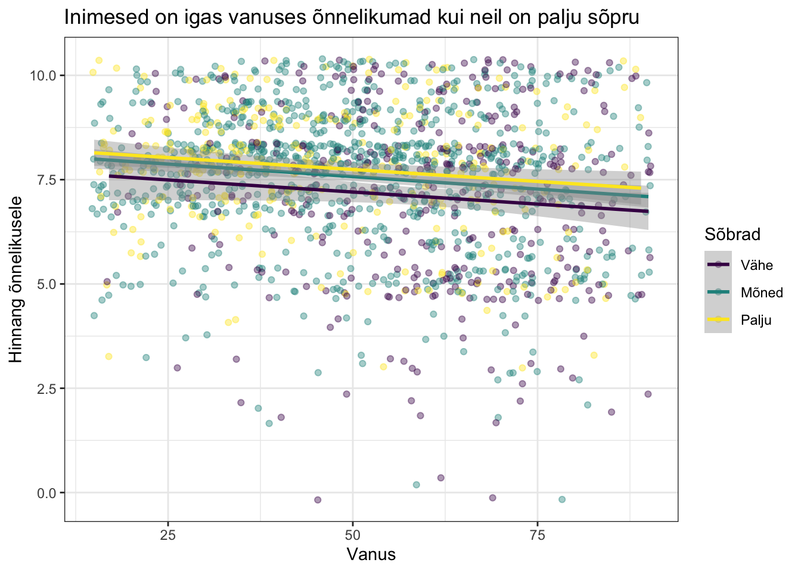
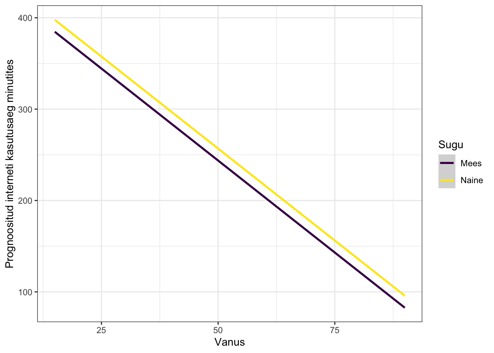
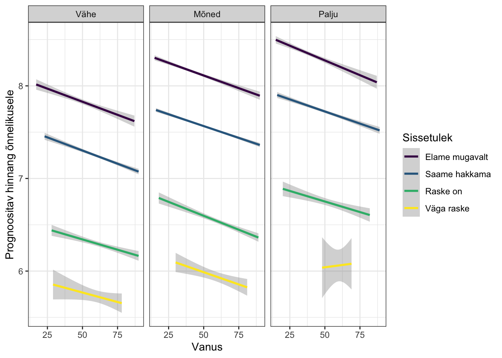
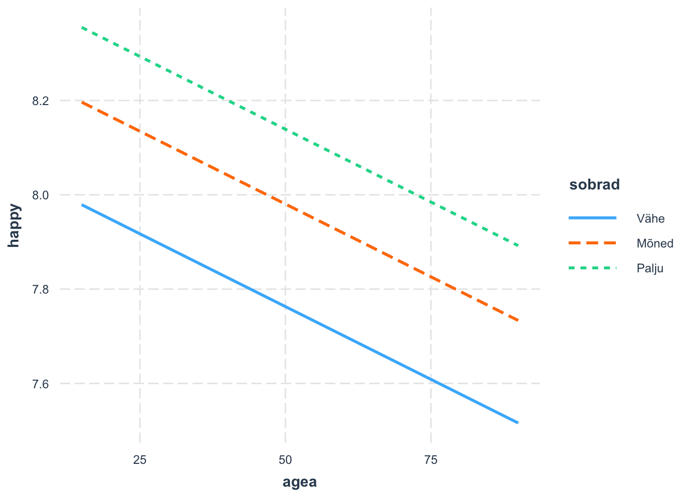

library(tidyverse)12 Regressioon - lineaarne
See peatükk annab ülevaate, kuidas teha lineaarset regressioonimudelit. Esmalt teen näite lihtsa (simple linear regression) ja hiljem mitmese (multiple linear regression) lineaarse regressooni kohta. Regressioonimudelid saab kätte R-i baasversiooniga, tidyverse paketti läheb vaja jooniste tegemisel.
Kasutan Euroopa Sotsiaaluuringu (edaspidi ESS) andmeid, mis on kogutud Eesti inimeste kohta uuringu 10. voorus. Andmed on võimalik alla laadida ESS andmete portaalist. Siin peatükis olen teinud 10. voorust väljavõtte paari tunnuse kohta1.
Siin peatükis olevad joonised ja mudelid ei näita teab-mis väärtuslikku selgitusvõimet. Sotsiaalteadustes sageli ongi nii, et päris paari näitaja pealt ei saa midagi tugevalt väita, sest inimesed ei ela vaakumis. R-is mudelite tegema õppimiseks piisab neist näidetest, sest päriselus analüüsimine võibi olla nii. Valid tunnused, mis arvad olevat väärtuslikud ja saad tulemuse, et ei saagi neid kasutada. Kuid ka see teadmine, mis ei tööta, on vajalik teadmine.
Kui sa ei tea, mis on regressioonianalüüs, siis sellest peatükist siin jääb ilmselt väheks. Päris huupi tunnuseid mudelitesse toppida ikkagi pole vaja ning tunnuste valik vajab siiski eeltööd.
Tunnuste jaotuse ja seoste analüüsi läbiviimist R-iga olen kirjeldatud eelmistes peatükkides. Jätan need vahele ja liigun kohe mudelite tegemise juurde. Osaliselt peidetud kood on joonistel, sest põhirõhk on siiski regressioonianalüüsi tegemisel.
Lugemissoovitus
Tooding, L-M. (2014). Regressioonimudelid. K. Rootalu, V. Kalmus, A. Masso, ja T. Vihalemm (toim), Sotsiaalse analüüsi meetodite ja metodoloogia õpibaas. https://samm.ut.ee/regressioonanalyys/
12.1 Lihtne lineaarne regressioon
Lihtne lineaarne regressioon vajab vaid kahte numbrilist tunnust.
andmed<-read_csv("ESS_10_valik.csv")andmed<-andmed%>%
mutate(across(where(is.character), as.factor))Euroopa sotsiaaluuringu (ESS) andmestikus on meil kasutada mõned numbrilised tunnused.
- agea - vanus (aastates)
- nwspol - inimeste uudiste jälgmise aeg (minuteid päevas). Küsimus: Kui palju aega umbes veedate te tavalisel päeval, vaadates, lugedes või kuulates poliitika- ja päevakajalisi uudiseid?
- netustm - interneti kasutamise aeg (minuteid päevas). Kui palju aega umbes veedate te tavalisel päeval arvutis, tahvelarvutis, nutitelefonis või muus seadmes internetti kasutades, olgu siis töö jaoks või isiklikuks otstarbeks?
Code
andmed%>%
ggplot(aes(agea, netustm))+
geom_point() +
1 geom_smooth(method=lm) +
theme_bw()+
labs(x="vanus",
y="interneti kasutusaeg minutites")- 1
- Kui on soov joonelt saada ära hall taust, tuleb lisada “se =F”
`geom_smooth()` using formula = 'y ~ x'
Ei ütleks, et siin on just midagi väga selgelt eristuvat lineaarset joont. Vanuse kasvades langeb interneti kasutusaeg.
Sellegi poolest teeme lineaarse regressioonimudeli, mille abil püüame prognoosida interneti kasutuse minuteid inimese vanuse põhjal. Mudeli tegemine käib baasversiooni käsuga lm() ning mudeli ülevaate saamine käsuga summary().
Pane tähele, et tunnuste nimed tuleb öelda eraldi ja alles lõpus täpsustada, millisest andmestikust tunnused võtta tuleb.
mudel1<-lm(netustm ~ agea, data=andmed)summary(mudel1)
Call:
lm(formula = netustm ~ agea, data = andmed)
Residuals:
Min 1Q Median 3Q Max
-340.9 -141.2 -51.3 105.1 1188.9
Coefficients:
Estimate Std. Error t value Pr(>|t|)
(Intercept) 450.5913 16.3527 27.55 <2e-16 ***
agea -3.9898 0.3358 -11.88 <2e-16 ***
---
Signif. codes: 0 '***' 0.001 '**' 0.01 '*' 0.05 '.' 0.1 ' ' 1
Residual standard error: 187.7 on 1185 degrees of freedom
(355 observations deleted due to missingness)
Multiple R-squared: 0.1064, Adjusted R-squared: 0.1057
F-statistic: 141.2 on 1 and 1185 DF, p-value: < 2.2e-16Kui ei soovi saada teaduslikku kirjapilti olulisuse tõenäosuse kohta mudeli väljatrükis, siis käivta kood options(scipen=999) ning telli väljatrükk uuesti.
options(scipen=999)Kiirem viis mudelist kohe tulemus saada on “piping” %>% kaudu. Sellega ei teki aga võimalust kasutada predict() funktsiooni või luua automaatseid pilte mudelist mudeli headuse hindamiseks.
lm(netustm ~ agea, data=andmed)%>%
summary()
Call:
lm(formula = netustm ~ agea, data = andmed)
Residuals:
Min 1Q Median 3Q Max
-340.9 -141.2 -51.3 105.1 1188.9
Coefficients:
Estimate Std. Error t value Pr(>|t|)
(Intercept) 450.5913 16.3527 27.55 <0.0000000000000002 ***
agea -3.9898 0.3358 -11.88 <0.0000000000000002 ***
---
Signif. codes: 0 '***' 0.001 '**' 0.01 '*' 0.05 '.' 0.1 ' ' 1
Residual standard error: 187.7 on 1185 degrees of freedom
(355 observations deleted due to missingness)
Multiple R-squared: 0.1064, Adjusted R-squared: 0.1057
F-statistic: 141.2 on 1 and 1185 DF, p-value: < 0.00000000000000022Mudelitest parema ülevaate saamiseks soovitan kasutada mõnda muud paketti kui baaskäsku summary(). Vaata näidist alapeatükist Regressioonimudeli tulemuste esitlemine.
Mudeli tõlgendamine
(Intercept) rida on nn teoreetiline ja näitab seda, millal y telg ristub x teljega. Päriselus taolist olukorda ei teki kunagi, sest kui inimese vanus on 0 (ehk pole sündinudki), siis on ka tema interneti kasutusminutite aeg 0.
agea on -3.9898, standardhälve 0.3358 ning t value (-11.88). Rea lõpus on p väärtus, mis on madal. Mudel oleks justkui hea, sest vanuse tunnus paistab olevat statiliselt olulise väärtusega.
Kuna meil on simple linear regression, siis vaatame Multiple R-Squared: 0,1064 ehk 0,11 ehk 11% inimese interneti kasutamisajast saame seletada tema vanuse kaudu. Mitte just vapustavalt tugev mudel.
F-statistic: 141.2 ja \(p<0.05\). Tegemist on statistiliselt olulise väärtusega.
Mudeli kasutamine prognoosimiseks
Mudeli kasutamine prognoosiks käib käsu predict() abil. Käsk predict() töötab andmestikuga. Teen esmalt andmestiku “test”, kus on sama moodi tunnus “agea”. Lasen vanuse põhjal prognoosida kui kaua need inimesed keskmiselt kasutaks interneti.
- 1
- loon andmestiku sama tunnusega
- 2
- kasutan mudelit ja andmestiku, et saada prognoositulemuste vastus
1 2 3 4 5
398.7232 378.7740 322.9161 338.8755 187.2612 13-aastane inimene mudeli prognoosi kohaselt kasutaks internetis päevas 399 minutit ja 66-aastane inimene keskmiselt 187 minutit.
Kui tahad vaadata ainult konkreetset näitaja tulemust, siis kasuta data.frame() käsku predict() sees.
predict(mudel1, data.frame(agea=25)) 1
350.845 12.2 Mudeli elementide kasutamine
Praegu oleme teinud mitu mudelit ja salvestanud selle enivroment keskkonda. Lihtne mudel sisaldab 13 elementi ja mitmene 14. Nende elementide nägemiseks kasuta käsku names().
names(mudel1) [1] "coefficients" "residuals" "effects" "rank"
[5] "fitted.values" "assign" "qr" "df.residual"
[9] "na.action" "xlevels" "call" "terms"
[13] "model" Oletame, et soovime väljatrükis saada ainult regressioonikordajad. Selleks saame kasutada elemendi nime lisada sulgudesse mudel.
coefficients(mudel1)(Intercept) agea
450.59128 -3.98985 Regressioonikordajate 95% usaldusvahemiku saab käsuga confint() ja täpsutus level=. (NB! Ilma täpsustuseta ongi vaikimisi väärtus 0.95 ning seda eraldi kirjutama ei peaks).
confint(mudel1, level = 0.95) 2.5 % 97.5 %
(Intercept) 418.507804 482.674748
agea -4.648724 -3.330976Iga inimese prognoositud väärtusi saab tellida käsuga fitted() ja prognoosijäägid käsuga residuals().
fitted(mudel1)%>%
head() 1 2 3 4 5 6
322.9161 223.1698 374.7841 199.2307 127.4134 235.1394 residuals(mudel1)%>%
head() 1 2 3 4 5 6
-142.91608 -163.16984 105.21587 -79.23074 -67.41344 64.86061 Mudelit ennast saab kasutada dispersioonianalüüsi läbiviimiseks.
#anova(mudel1)Mudeli headuse näitajad saab kätte käsuga AIC() ja BIC() . Lühidalt mida väiksem väärtus, seda parem mudel.
AIC(mudel1)[1] 15800.5BIC(mudel1)[1] 15815.7412.3 Joonised mudeli hindamiseks
Mudeli tulemuste jooniste tegemiseks vaata alapeatükki Regressioonimudeli tulemuste visualiseerimine.
Mudelist kiirjooniste saamine käib käsuga plot(). Kui on soov ruumi kokku hoida, saab käsuga par() täpsutada, et väljatrükk tuleks 2 reas ja 2 tulbas.
par(mfrow=c(2,2))
plot(mudel1)
Lineaarse mudeli eelduseks on tunnuste omavaheline lineaarne seos. Lisaks on eeldus, et prognoosijäägid (residuaalid) on normaaljaotusega, neil puudub kindel muster ning on sõltumatud.
Nende piltide põhjal saab teha suurema osa järeldusi. Jooniselt residual vs fitted kuvatakse prognoosijääke tunnuse prognoositud väärtustega võrreldes. Sel pildil ei tahaks näha mustrit ning sooviks, et punktid mõlemal pool joont nn “suvaliselt laiali”. Sellega veenduks lineaarses seoses.
Residuaalide normaaljaotuses saaks vaadata joonise q-q residual kaudu, millelt tahaks näha kõiki täpikesi pigem joone peal lineaarselt liikumas.
Residuaalide normaaljaotuse nägemiseks saaks tellida käskude hist() ning residuals() ühendamisel.
hist(residuals(mudel1))
Igasugune piltide põhjal hinnangu andmine on siiski subjektiivne. Kindluse mõttes tasub mudeli eelduste täituvuse kohta teha eraldi testid.
12.4 Testid mudeli hindamiseks
Need testid sobivad lihtsa ja mitmese regresioonimudelite hindamiseks.
Mudeli headuse hindamine käib paketi lmtest (Zeileis and Hothorn 2002) käsu harvtest() abil.
library(lmtest)Käsuga harvtest() testime null-hüpoteesi, milleks on mudeli tunnuste vahel on lineaarne seos.
Tulemuse tõlgendamine on siin teistsugune kui tavaliselt. Kui p-väärtus on väiksem kui 0,05 peaksime hülgama null-hüpoteesi. See tähendaks, et tunnuste vahel ei ole lineaarset seost ning lineaarset regressioonimudelit teha ei sobiks. See on üks väheseid kordi, kus soovime suurt p-väärtust.
harvtest(mudel1)
Harvey-Collier test
data: mudel1
HC = 0.516, df = 1184, p-value = 0.606Käsuga shapiro.test() saab vaadata, kas residuaalide osas on normaaljaotus. Loodame näha suuremat p-d.
shapiro.test(residuals(mudel1))
Shapiro-Wilk normality test
data: residuals(mudel1)
W = 0.91183, p-value < 0.00000000000000022Antud juhul test kinnitab, et eeltingimus regressioonijääkide normaaljaotuse osas pole täidetud.
Käsuga pbtest() saab testida homoskedastilisust (null-hüpotees). Taaskord loodame näha, et p-väärtus on suurem kui 0,05.
bptest(mudel1)
studentized Breusch-Pagan test
data: mudel1
BP = 2.8303, df = 1, p-value = 0.0925Viimane on residuaalide sõltumatuse testimine. Selleks läheb vaja paketti car (Fox and Weisberg 2019) ja käsku dubrinWatsonTest().
library(car)dubrinWatsonTest() käsu väljatrükis tuleb vaadata p-väärtuse asemel D-W statistiku väärtust. Regressioonijäägid on sõltumatud kui D-W statistiku väärtus on lähedal numbrile 2. Antud juhul siis sõltumatud2.
durbinWatsonTest(mudel1) lag Autocorrelation D-W Statistic p-value
1 -0.02771863 2.054784 0.364
Alternative hypothesis: rho != 0Mitme seletava tunnusega lineaarse regressioonimudel tegemisel peab mõtlema ka kolineaarsuse peale. Vaata selle testimist alapeatükist Multikollineaarsuse hindamine.
12.5 Mitmene regressioon
Mitmene regressioon on sarnane lihtsale, aga sõltumatuid tunnuseid on rohkem kui üks.
Ma ei tee fookuse hoidmiseks mudeli hindamise teste ning liigume siin peatükis edasi nii, nagu oleks kõik tunnuste eelduste kontroll läbitud.
ESS andmestikus on meil teada lisaks vanusele ka vastaja sugu (gndr). Me võime proovida selgitada inimeste internetis kasutamisaega läbi nende soo.
Kas mehed ja naised veedavad internetis aega erinevalt?
Code
andmed%>%
drop_na(agea, netustm)%>%
ggplot(aes(agea, netustm, color=gndr))+
geom_point()+
geom_smooth(method = lm)+
theme_bw()+
labs(x="Vanus",
y="Interneti kasutusaeg minutites",
color="Sugu")+
scale_color_viridis_d()`geom_smooth()` using formula = 'y ~ x'
Jooniselt on näha, et ega soo tunnus väga suurt erinevust pilti sisse ei too. Ilmselt ei tasu oodata ka, et meeste ja naiste keskmise internetikasutusaja võrdlus näitaks statistliselt olulist erinevust.
Mitmese regrssiooni tegemine käib sama käsuga lm(), tunnuste lisamine mudelisse käib + märgiga.
mudel2<-lm(netustm~ agea + gndr, data= andmed)
summary(mudel2)
Call:
lm(formula = netustm ~ agea + gndr, data = andmed)
Residuals:
Min 1Q Median 3Q Max
-334.37 -140.49 -51.65 106.76 1183.13
Coefficients:
Estimate Std. Error t value Pr(>|t|)
(Intercept) 445.0680 16.9909 26.194 <0.0000000000000002 ***
agea -4.0267 0.3372 -11.942 <0.0000000000000002 ***
gndrNaine 13.1354 10.9954 1.195 0.232
---
Signif. codes: 0 '***' 0.001 '**' 0.01 '*' 0.05 '.' 0.1 ' ' 1
Residual standard error: 187.7 on 1184 degrees of freedom
(355 observations deleted due to missingness)
Multiple R-squared: 0.1075, Adjusted R-squared: 0.106
F-statistic: 71.32 on 2 and 1184 DF, p-value: < 0.00000000000000022Mitmese regressioonimudeli tõlgendamine
Mudeli selgitusvõime ootuspäraselt eriti ei paranenud.Väljatrükk kuvab meile interneti kasutusaja puhul vaid ühte tunnuse väärtust (gndrNaine). Taustakategooria see, mida me ei näe ehk kategooria “Mees”. Kuna nüüd on kasutusel mitmene lineaarne regression, siis tuleb vaadata Multiple R-squared asemel Adjusted R-squared väärtust (0,106). See tähendab, et umbes 11% interneti kasutusest saame selgitada inimese vanuse ja soo kaudu.
See tähendab seda, et vanuse kasvades langeb iga aastaga interneti kasutusaeg -4,0267 minutit ning naiseks olemine annab kasutusajale juurde 13,1354 minutit. Ehk, kui me enne predict()käsuga ennustasime, et 13-aastane inimene veedab internetis aega 399 minutit. Siis praegu, kui me oletame, et tegemist on naisega, siis veedab ta internetis aega \(445.0680+(-4.0267*13)+13.1354 = 405.8563\) minutit.
Lisame testandmestikule vektori soo tunnusega ning kasutame seda prognoosimudelis. Esimene inimene on 13-aastane naine ja saame tema kasutusajaks sama tulemuse.
test$gndr<-c("Naine", "Mees", "Mees", "Naine", "Naine")
predict(mudel2, test) 1 2 3 4 5
405.8563 372.5874 316.2136 345.4558 192.4413 Mudelite põhjal igasuguse järelduste tegemisel peab olema ettevaatlik. Vanus ei põhjusta interneti kasutamise vähenemist. Võib-olla tulevikus kui kõik inimesed on üles kasvanud koos internetiga, on selle kasutusaeg igas põlvkonnas täpselt ühesugune.
Salvestan praegu prognoositulemuse andmestikku, et seda hiljem tulemuste esitlemisel kasutada. Vaata alapeatükki Regressioonimudeli tulemuste visualiseerimine.
Pane tähele, et nüüd kasutame predict() käsu sees täpsustust newdata= mitte data=.
andmed$prognoos_net<-predict(mudel2, newdata = andmed)Mitu seletavat tunnust mudelis
Muudame kurssi ja vaatame taaskord inimese õnnelikuks olemist. Keskmiste võrdluse tegemisel oli näha, et need kes sissetulekute poolest hindasid end “elame mugavalt praeguse sissetuleku juures” hindasid end ka keskmiselt õnnelikumaks kui need, kelle hinnang oma sissetuleku kohta oli “Praeguse sissetuleku juures on väga raske hakkama saada”. Tavaliselt noortel raha eriti pole, eakamad inimesed on jõudnud elu jooksul omale soetada vara (elupaik, autod jms).
Uurime, kas eakamad inimesed on õnnelikumad, sest neil on rohkem raha? Lisaks vaatame, kas õnn peitub ainult rahas või sotsiaalsetes suhtes. Sõprade olemasolu mõõdeti küsimusega: Kui palju on inimesi, kui üldse on, kellega saate arutada oma isiklikke ja intiimseid asju?
Tunnus inprdsc ja kategooriad: “Mitte ühtegi”, “1”, “2”, “3”, “4-6”, “7-9” ja “10 või enam”. Teeme tunnuse ringi väiksemateks katoogriateks (vajadusel loe juurde töö faktoritega peatükki.
Code
andmed$sobrad<-fct_collapse(andmed$inprdsc,
"Vähe" = c("Mitte ühtegi","1"),
"Mõned"= c("2", "3"),
"Palju"=c("4-6" ,"7-9", "10 või enam"))
andmed$sobrad<-fct_relevel(andmed$sobrad, c("Vähe", "Mõned", "Palju"))Code
andmed$hincfel<-fct_relevel(andmed$hincfel,
"Elame mugavalt praeguse sissetuleku juures",
"Saame hakkama praeguse sissetuleku juures",
"Praeguse sissetuleku juures on raske hakkama saada",
"Praeguse sissetuleku juures on väga raske hakkama saada")Nüüd näeme jooniselt, et inimesed on igas vanuses õnnelikumad, kui neil on palju sõpru. Noorematel inimestel tundub kollaseid täpikesi (st=palju sõpru) olema rohkem kui eakamatel.
Code
andmed%>%
drop_na(agea, happy, sobrad)%>%
ggplot( aes(agea, happy))+
geom_jitter(aes(color=sobrad),
alpha=0.4)+
geom_smooth(method="lm",
aes(color=sobrad))+
labs(title="Inimesed on igas vanuses õnnelikumad kui neil on palju sõpru",
x="Vanus",
y="Hinnang õnnelikusele",
color="Sõbrad",
shape="Sugu")+
theme_bw()+
scale_color_viridis_d()`geom_smooth()` using formula = 'y ~ x'
Kasutame nüüd samu andmeid prognoosimudelites ning lisame seletavaid tunnuseid juurde + märgiga juurde. Pane tähele, et kirjutan varemloodud mudelid 1 ja 2 praegu üle.
mudel1 <- lm(happy ~ agea, data=andmed)
summary(mudel1)
Call:
lm(formula = happy ~ agea, data = andmed)
Residuals:
Min 1Q Median 3Q Max
-7.5936 -0.9066 0.2784 1.1930 3.0468
Coefficients:
Estimate Std. Error t value Pr(>|t|)
(Intercept) 8.233957 0.129667 63.501 < 0.0000000000000002 ***
agea -0.014231 0.002363 -6.023 0.00000000214 ***
---
Signif. codes: 0 '***' 0.001 '**' 0.01 '*' 0.05 '.' 0.1 ' ' 1
Residual standard error: 1.722 on 1539 degrees of freedom
(1 observation deleted due to missingness)
Multiple R-squared: 0.02303, Adjusted R-squared: 0.02239
F-statistic: 36.28 on 1 and 1539 DF, p-value: 0.0000000021382% inimese õnnelikkuse hinnangust saame seletada tema vanuse järgi.
mudel2 <- lm(happy ~ agea + hincfel, data=andmed)
mudel3 <- lm(happy ~ agea + hincfel + gndr, data=andmed)
mudel4 <- lm(happy ~ agea + hincfel + gndr + sobrad, data=andmed)Jätan praegu väljatrükid summary() käsuga tellimata, sest mitme mudeli väljatrükk on kohmakas, eriti kui tunnuste kategooriate nimed on väga pikad. Selle ja järgmiste mudeli tulemuste esitlemine jätkub allpool alapool alapeatükis Regressioonimudeli tulemuste esitlemine. Mudeli elemente on võimalik välja küsida ka ükshaaval ning sellest räägib alapeatükk Mudeli elementide kasutamine.
Multikollineaarsuse hindamine
Mul ei ole praegu tehtud mudelit, kus seletavad tunnused saaksid ka olla omavahel lineaarses seoses. Ühe näitaja suurenedes peaks tõusma ka teine. Näiteks rannas müüdavate jäätise arv tõuseb kui välitemperatuur tõuseb. Rannas juhtuvate õnnetuste arv võib olla lineaarses seoses välitemperatuuriga. Õnnetuste arvu prognoomisisel oleksid seletavad tunnustena rannas müüdavate jäätiste arv ning välitemperatuuri arv ka kollineaarses seoses.
Multikollineaarsuse hindamist saab teha paketiga car ning käsuga vif().
vif(mudel4) GVIF Df GVIF^(1/(2*Df))
agea 1.167129 1 1.080337
hincfel 1.107629 3 1.017183
gndr 1.042810 1 1.021181
sobrad 1.110698 2 1.026595VIF miinimuväärtus on 1 ja meie mudeli väärtused on selle lähedal. Multikollineaarsusega häda ei ole.
12.6 Regressioonimudeli tulemuste esitlemine
Oleme teinud nüüd õnnelikuse prognoosimise kohta neli mudelit (mudelid nr 1-4). Soovime neid omavahel võrrelda, et teada saada, milline loodud mudel on neist parim. Kuna summary() käsuga ei ole neli mudelit korraga hästi hoomatavad, soovitan selleks kasutada paketist huxtable(Hugh-Jones 2024) käsku huxreg().
library(huxtable)huxreg(mudel1, mudel2, mudel3, mudel4)| (1) | (2) | (3) | (4) | |
|---|---|---|---|---|
| (Intercept) | 8.234 *** | 8.452 *** | 8.339 *** | 8.072 *** |
| (0.130) | (0.131) | (0.136) | (0.169) | |
| agea | -0.014 *** | -0.007 ** | -0.008 ** | -0.006 * |
| (0.002) | (0.002) | (0.002) | (0.002) | |
| hincfelSaame hakkama praeguse sissetuleku juures | -0.563 *** | -0.561 *** | -0.548 *** | |
| (0.103) | (0.103) | (0.103) | ||
| hincfelPraeguse sissetuleku juures on raske hakkama saada | -1.554 *** | -1.562 *** | -1.525 *** | |
| (0.150) | (0.150) | (0.150) | ||
| hincfelPraeguse sissetuleku juures on väga raske hakkama saada | -2.154 *** | -2.148 *** | -2.108 *** | |
| (0.270) | (0.270) | (0.269) | ||
| gndrNaine | 0.268 ** | 0.225 ** | ||
| (0.085) | (0.086) | |||
| sobradMõned | 0.217 * | |||
| (0.106) | ||||
| sobradPalju | 0.376 ** | |||
| (0.130) | ||||
| N | 1541 | 1541 | 1541 | 1539 |
| R2 | 0.023 | 0.107 | 0.112 | 0.117 |
| logLik | -3023.114 | -2954.147 | -2949.135 | -2941.498 |
| AIC | 6052.228 | 5920.294 | 5912.270 | 5900.996 |
| *** p < 0.001; ** p < 0.01; * p < 0.05. | ||||
Mudelite omavahelises võrdluses paistab mudel4 olevat kõige parema seletusvõimega (AIC kõige väiksem, R2 seletusvõime kõige kõrgem). Salvestan andmestikku uue tunnuse mudel4 põhjal. Kasutan seda tulemuste visualiseerimisel.
andmed$prognoos_onn<-predict(mudel4, newdata = andmed)Ideaalselt tahame saada mudelit, mis võimalikult väheste seletavate tunnustega suudaks kirjeldada ära võimalikult suure mahu olemasolevast. Iga uue tunnuse lisamisel mudelisse võib paratamatult tõsta R2 väärtust, kuid pigem sooviks näha hüppelisi muutusi nagu mudel nr 1 ja nr 2 puhul, mitte nagu mudelite nr 3 ja nr 4. Tulemuste esitlemisel ole kriitiline ja aus. Kui mudeli seletusvõime on ikkagi kohe eos vaid 2%, siis võib-olla ei tasuks mudelit muude tunnustega edasi arendama hakatagi. Võib-olla on kasu mõnest muust analüüsimeetodist kui lineaarsest regressioonist?
12.7 Regressioonimudeli tulemuste visualiseerimine
Kasuta joonisel tunnust, mille lõid käsuga predict(). Vajadusel loe ggplot() käsu töötamise kohta juurde siit.
Code
andmed%>%
drop_na(agea, prognoos_net)%>%
ggplot( aes(agea, prognoos_net))+
geom_smooth(method = "lm",
aes(color=gndr))+
theme_bw()+
labs(x="Vanus",
y="Prognoositud interneti kasutusaeg minutites",
color="Sugu")+
scale_color_viridis_d()`geom_smooth()` using formula = 'y ~ x'
Jooniselt selgub, et mudeli kohaselt kasutavad naised meestest internetti rohkem (igas vanuses) ning meeste ja naiste prognoositav internetikasutusaeg langeb aastatega sarnaselt.
Kuidas on aga inimeste õnnelikuks olemisega? Mida saame oma prognoosimudeli kohta öelda pilti vaadates?
Meie mudeli4 järgi paistab, et kõige õnnelikumad on need, kellel on palju sõpru ja mugav elada. Vanuse kasvades (prognoosimudeli järgi) hinnang õnnelikusele igal juhul langeb. Need, kellel on vähe sõpru, need on igal juhul õnnetumad kui sama sissetulekuga aga rohkemate sõpradega inimesed. Need inimesed, kes hindavad oma sissetuleku põhjal toimetulekuvõime väga raskeks, nende puhul usaldusvahemikud kõiguvad väga palju.
Code
andmed%>%
drop_na(agea, happy, sobrad)%>%
ggplot( aes(agea, prognoos_onn))+
geom_smooth(method="lm",
aes(color=hincfel))+
labs(x="Vanus",
y="Prognoositav hinnang õnnelikusele",
color="Sissetulek")+
facet_wrap(~sobrad)+
theme_bw()+
scale_color_viridis_d(labels=c("Elame mugavalt", "Saame hakkama", "Raske on", "Väga raske"))`geom_smooth()` using formula = 'y ~ x'
Tulemuste visualiseerimine paketiga interactions
Regressioonimudeli jooniseid saab kiiresit kätte paketiga interactions(Long 2019) käsuga interact_plot().
library(interactions)interact_plot(mudel4, pred=agea, modx=sobrad)